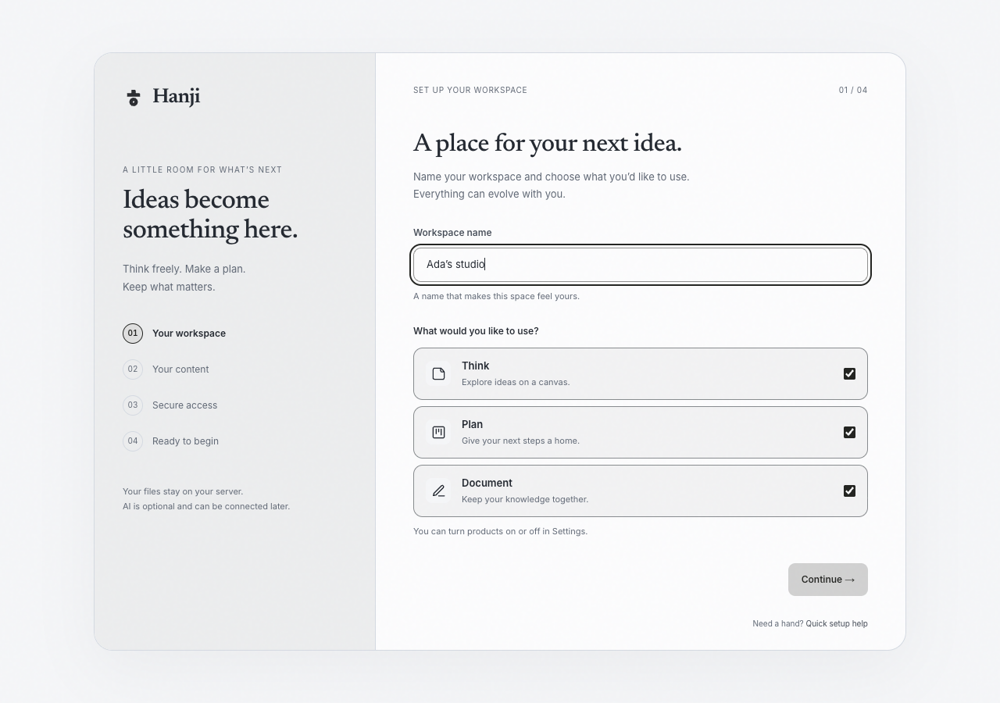
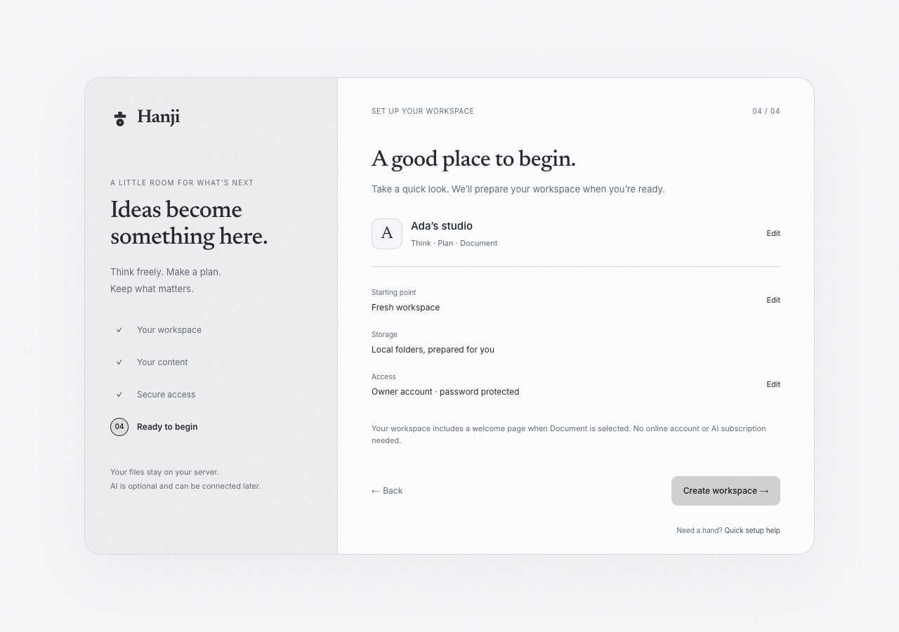
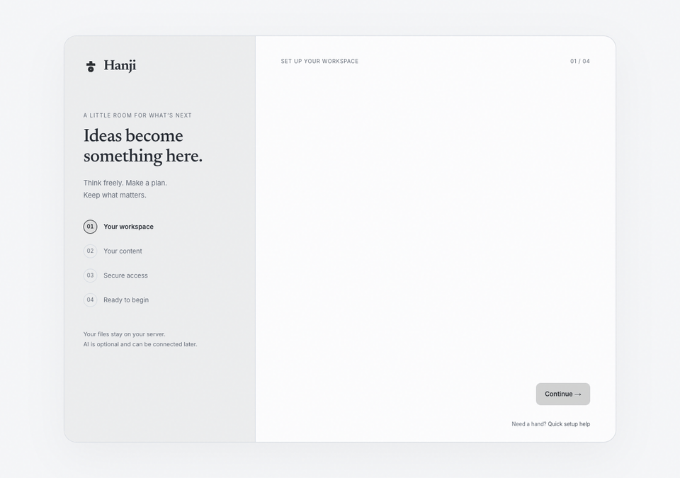
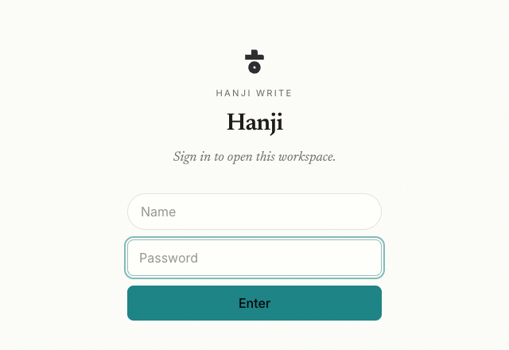

Hanji
HanjiInstall Hanji
Hanji runs today on a machine you own - the same way we run it ourselves, daily. The short version: install, pnpm dev:web, and the first visit walks you through everything on a welcome screen. This page keeps the explicit path - environment variables and CLI - for servers, scripts, and the people who like to see the wiring. Anything set by env always wins over what the welcome screen stored.
Desktop preview: from download to workspace
The desktop preview is currently shared directly; no public binary release is published. The desktop setup guide explains access, installation and the first few minutes. Once you receive a preview archive:
- Unzip it and read Start here.html. Use the build shared for your Mac.
- Move Hanji.app into Applications, then open it there.
- Choose Create your workspace. Existing workspace folders and team addresses have separate entry points on the same screen.
- Name the workspace and choose Think, Plan and Document. All three start on; Settings can change the selection later.
- Choose Start fresh to let Hanji prepare the selected products’ folders. Document includes an editable welcome page. Bring existing content asks for only the relevant Markdown, repository, tracker and canvas sources.
- Set and confirm the owner's password, review the choices, then select Create workspace. The desktop signs this Mac in automatically.
Quick setup help opens inside onboarding, with guidance available even before a workspace exists. Escape closes it and returns focus to its button.
The name, selected products and fresh/import choice survive a reload in this browser tab. Passwords are never stored in that draft. Back and review links keep in-memory choices. Setup errors remain visible and can be corrected or retried; new folders and mounts roll back before the owner account is stored. Existing files are preserved. New fresh-start folders live inside the data folder, with a numbered suffix when an existing folder already uses the name.



Preview signing and notarization depend on the supplied build. If macOS cannot verify it, confirm its source with the person sharing it and follow Apple’s guidance on opening apps safely. The preview pack never changes Gatekeeper settings.
Preparing a preview to share
Build the desktop bundle using pnpm --filter desktop bundle, then run:
bash apps/desktop/scripts/package-preview.sh /path/to/Hanji.app
The script creates a versioned, architecture-labeled ZIP and SHA-256 checksum
under apps/desktop/dist/. The archive includes Hanji.app, an Applications
shortcut and an offline Start here guide. It refuses to overwrite an existing
artifact. An optional second argument selects an output directory. It does not
publish a release, sign or notarize a build, or install it. Public distribution
still needs a release and the appropriate signing/notarization process.
Before you start
You need a recent Node, pnpm, and git. One dependency, the SQLite driver, is built from source on install, so you also need a working C toolchain: the Xcode command-line tools on a Mac, or build-essential on Linux. That is a known rough edge, and smoothing it out is on the Where we are.
Get it running
# 1. install
pnpm install
# 2. point it at a data dir and set the front's secrets
export HANJI_DATA_DIR=~/.hanji
export HANJI_SESSION_SECRET=$(openssl rand -hex 32)
export HANJI_OWNER_PASSWORD=choose-one
# 3. mount a repo you own (name, git url, mount path)
pnpm hanji add-mount notes git@github.com:you/notes.git notes
# 4. clone and index it
pnpm hanji sync
# 5. run the two surfaces
pnpm dev:web # the human front at http://localhost:4100
pnpm dev:mcp # the agent surface at http://localhost:4101/mcp
Open http://localhost:4100, sign in with the owner password you set, and your notes are there, rendered on cool neutral paper. That is the whole thing running.

The three secrets
| Variable | What it is |
|---|---|
HANJI_DATA_DIR | Where Hanji keeps clones, disposable index.db, and durable config.db (accounts, grants, settings and comments). Back up config.db; it is not rebuilt from Git. |
HANJI_SESSION_SECRET | The key that signs your login session. Any 32-byte hex string. |
HANJI_OWNER_PASSWORD | The password for the single owner account, the one that reads and writes everything. |
Two more are optional. HANJI_GITHUB_TOKEN lets the propose path open real pull requests on a clone mount (a local mount's proposal opens none), and HANJI_GIT_AUTHOR_NAME with HANJI_GIT_AUTHOR_EMAIL set the name on the owner's commits; without the variable, the name you set in Settings → People (Settings → General while the workspace has no people) is used, and with neither, Hanji Owner. See Agents for the first and Command reference for the rest.
Next, point Hanji at the repositories you actually want. Read Mounts.
Product activation restores document visibility synchronously, including when WebKit has paused a hidden view. Content arrival uses a short finite animation without changing the document’s opacity or positioning context.